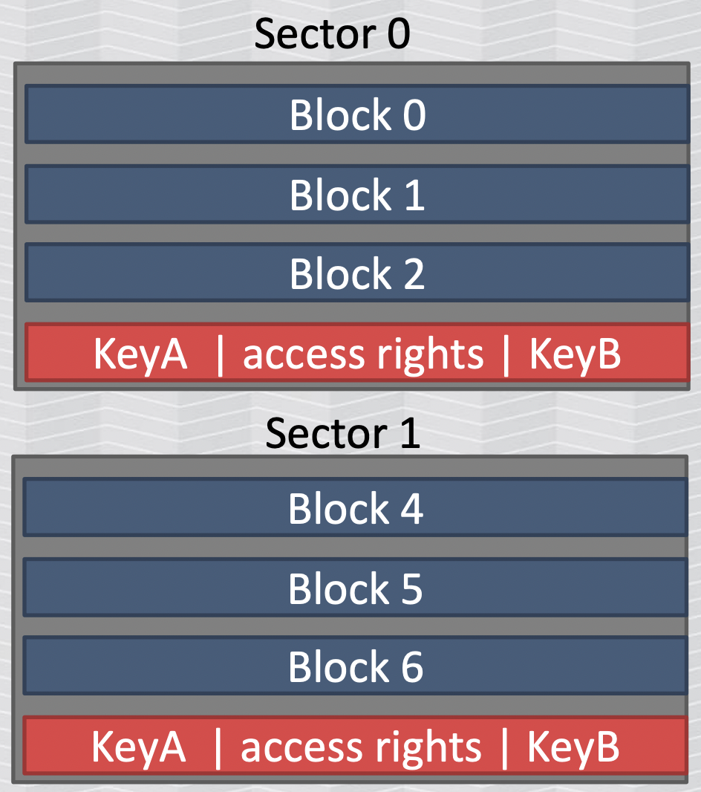

Primer on hacking Mifare Classic NFC
There is a lot of information out on the internet about Mifare Classic NFC
cards and the various exploits that they are subject to. However, the
information is often fragmented or assumes a lot of prior knowledge.
This post aims to collect all the relevant information and provide a
high-level overview of the terminology and available exploits.
Glossary
| Term | Definition |
|---|---|
| RFID | Radio-frequency identification. This is quite a broad, catch-all term that encompasses any system that uses electromagnetic fields to identify tags and/or transmit data. Frequency and range varies. |
| NFC | Near Field Communications. A subset of RFID that specifically uses the 13.56MHz frequency, giving it roughly 4cm of range (hence “near field”). Defines a set of communication protocols. |
| Mifare | A brand of smart cards from the company NXP, operating on the 13.56MHz frequency. It’s an implementation on top of the NFC communication protocols and can be read by NFC card readers. |
| NDEF | NFC Data Exchange Format - a standardized way to exchange data between NFC tags and devices. |
| SL1 | Security Level 1 [1]. Emulates Mifare Classic with standard CRYPTO1 cipher protocol. |
| SL2 | Security Level 2 [1:1]. Combination of CRYPTO1 and AES. |
| SL3 | Security Level 3 [1:2]. Most secure level offered by Mifare at the time of writing, using AES only. |
Mifare Classic primer
While I’m not going to cover any of the concepts in detail, it’s important
to understand at least the following.
Passive NFC
Unlike the super early generation of RFID cards which literally only had a
publicly readable ID, Mifare smart cards use passive NFC technology to
receive data and compute a response.
The card reader induces a current in the Mifare card via electromagnetic
fields, powering the Mifare card and allowing it to run the proprietary
CRYPTO1 algorithm on its
ASIC.
Cloning a Mifare Classic card is not as trivially simple as reading data off
it and writing that data onto a blank card. The Mifare card contains
non-readable information and instead uses a cryptographic exchange to secure
its data.
Memory layout
The Mifare Classic card consists of 16 sectors, each with four 16-byte
blocks. The last block contains:
- secret key A
- secret key B
- access rights of those two keys on the current sector

The secret keys are 48 bits in length. Typically, key A is used for reading
the sector data, while key B is used for writing. However, the rights can be
arbitrarily defined in the access rights section. I won’t go into detail
about the format of the access rights.
Typically, key A and key B are different. This allows a valid card reader to
possess key A and read data, while key B is only known by the master
programming device.
It’s entirely possible for each of the 16 sectors to have different keys,
but typically all the sectors share the same key A and key B.
There are a list of default keys with special meaning, such as:
FFFFFFFFFFFFis loaded as the default key for A and B on a blank chipD3F7D3F7D3F7must be set for key A if the Mifare Classic tag contains
NDEF data- …many more
Exploits
See these slides from a Black Hat conference.
| Exploit | Goal | Time required | Cards vulnerable | Tools | Paper |
|---|---|---|---|---|---|
| Brute-force default keys | Recover any key | ~10 seconds | All | mfoc, MCT | |
| Brute-force leaked keys | Recover any key | 1 minute | All | mfoc with custom list, MCT with included “extended” list | |
| Darkside attack | Recover any key | ~1 hour | Original Mifare Classic only | mfcuk | TODO |
| Nested attack | Recover other key | ~10 seconds | Original Mifare Classic only | mfoc | TODO |
| Hard-nested attack | Recover other key | ??? | Mifare Classic, Mifare Plus, maybe all? | mfoc-hardnested, miLazyCracker | TODO |
| CPU brute-force | Recover any key | ~4 years | All | Consumer-grade computer | TODO |
| GPU brute-force | Recover any key | ~10 hours | All | Extremely expensive GPU or FPGA array | TODO |
Types of Mifare cards
There are a staggering number of different Mifare cards, and information
available on the internet does not tend to reliably specify the exact type
of Mifare card that is being talked about.
The most notorious and commonly mentioned variant is the Mifare Classic 1K,
which was the most popular smart card on the market, and remains
ubiquitous in a large range of applications (swipe card access, public
transit, etc) despite it’s well known and well publicised vulnerabilities.
However, successfully exploiting the Mifare Classic 1K first requires that
you’re actually working with a Mifare Classic 1K. This is not so easy to
ascertain, and most of the information on the internet glosses over this
critically important step of identifying the exact card. There are a lot of
variants that are resistant to the known vulnerabilities to different levels.
Roughly speaking, there are the following families (non-exhaustive list):
- Mifare Classic
- Mifare Plus
- Mifare UltraLight
- Mifare DESFire
- SmartMX
And within each family, there are ~3-10 variants. A more comprehensive
listing and guide to identifying can be found at the MIFARE
type identification procedure [2].
Ultimately, for the purpose of running exploits against the card, all you
really need to know is:
- Is it literally the original, trivial to exploit Mifare Classic 1K?
- Is it something else emulating the Mifare Classic protocol?
If either of the above is true, you can try and run some of the well-known
exploits against the cards:
- Attempt to recover at least one key by brute-forcing default keys, or
leaked keys, or using a darkside attack - Attempt to recover the other keys by using a nested attack